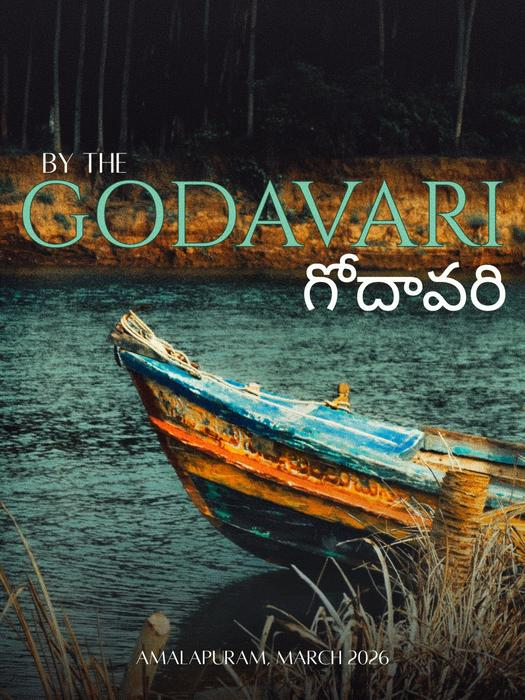

Tharan Sathyadass
Hi, I’m Tharan.
I live in Kothanur, Bangalore,
and I like making things.
and I like making things.



Tharan Sathyadass is a Bangalore-based Indian artist and photographer whose practice centres on capturing the relationship between people and their surroundings. Through a thoughtful and immersive approach, he documents everyday spaces, communities and shifting landscapes. Primarily working in travel photography along with interdisciplinary visual art, his work blends storytelling with artistic interpretation, highlighting mood, memory, emotions and the subtle narrative of space.
Rooted in real, unfiltered environments rather than staged frames, his photographs come from the streets, travels, rural terrain, youth cultures, and fleeting everyday encounters. With a background deeply connected to sport and outdoor life, he brings a heightened awareness of movement, posture and spatial relationships, giving his work an honesty and physical presence where humans, energy and environments coexist.
His photojournals have been published by the Museum of Art & Photography (MAP), positioning his practice within conversations on visual culture and contemporary image-making.
Alongside his artistic work, Tharan is actively involved in cultivating community-driven creative spaces. He is a co-founder of Kothanur Run Club, a youth-led social fitness collective that brings people together through large-scale community runs and shared movement. He also founded The ArtWave, a platform dedicated to hosting workshops and exhibitions that support local and emerging artists, encouraging collaboration and wider visibility. Together, these initiatives strengthen his engagement with collective energy, rhythm, and the dynamics of human connection, which in turn continues to shape his visual practice.
Tharan continues to develop a body of work that connects art, environment, and human experience. Through an intuitive visual language, he observes, documents, and thoughtfully reflects the worlds he moves through, capturing moments that linger beyond the frame.
Co-founded by Tharan, this social fitness club brings together large communities, inculcating movement, culture and shared experiences. Defying various societal expectations, this initiative has organised large-scale runs and continues to build a growing fitness community rooted in connection rather than competition.
A creative platform, led and co-owned by Tharan, that organises workshops and exhibitions to support local and emerging artists, fostering accessible spaces for collaboration, visibility, and creative exchange. It encourages meaningful dialogue between art, community and lived experiences.